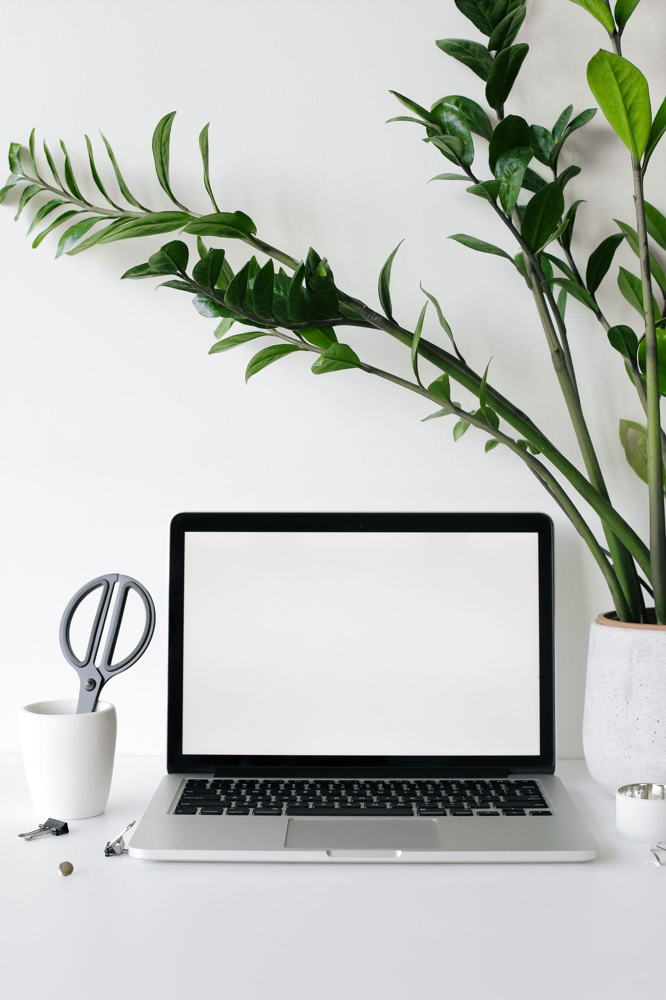

مساحتك، وصورتك حين تضيفها.
اسمك هنا.
عنوانك المهني، في سطر واضح.

مساحتك، وصورتك حين تضيفها.
عنوانك المهني، في سطر واضح.
اكتب هنا نبذة قصيرة عنك، ما الذي تعمل عليه، وما الذي تحب أن يعرفه الزائر قبل أن يتواصل معك. اجعلها بسيطة وقريبة من صوتك.
استبدل خانات التواصل ببياناتك من ملف الإعدادات، من غير ما تغيّر شكل الصفحة.
هذه الخطوة غير متصلة بخدمة فعلية حاليًا، ولم يتم إرسال أي طلب أو تحصيل أي مبلغ.